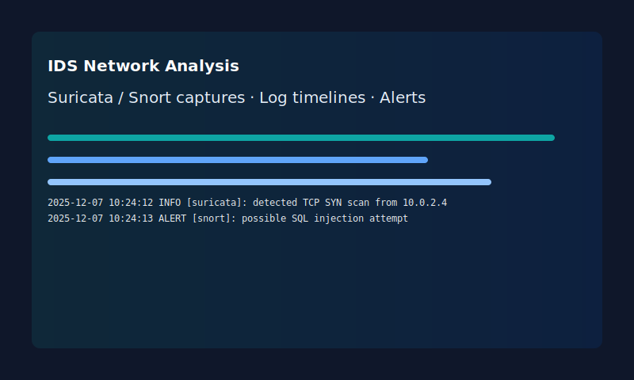
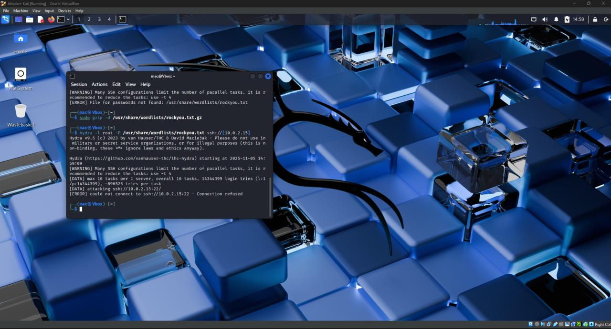
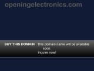

Aspiring Cybersecurity Specialist
I used Suricata and Snort on a Linux VM to collect and analyze network logs. This project demonstrates how to monitor, detect, and respond to threats, and documents ways to improve system resilience.
A two-VM environment (Kali attacker & Ubuntu defender) used to simulate scanning, detection, traffic logging, and defensive response techniques.
A demonstration of a technology retail network and website deployment (hosted via IONOS and related tools). It includes notes on site setup, integration, and promotional strategies.
Download: assets/CV.pdf (place your CV at assets/CV.pdf to enable direct download)
you@example.com (replace with your real address)If you'd like, I can add your real email or upload a CV file into assets/ so the download link works.